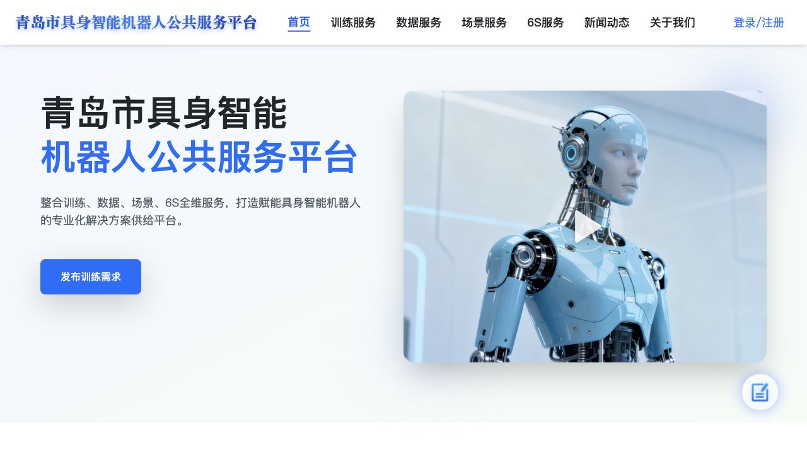
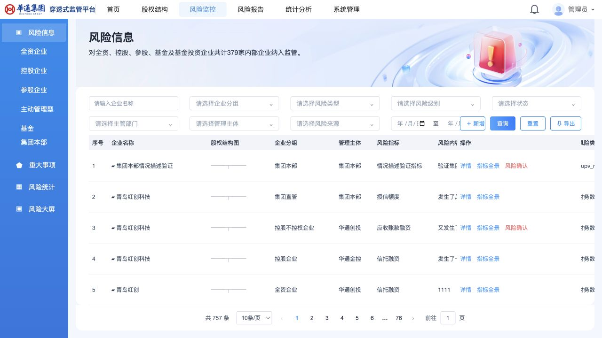
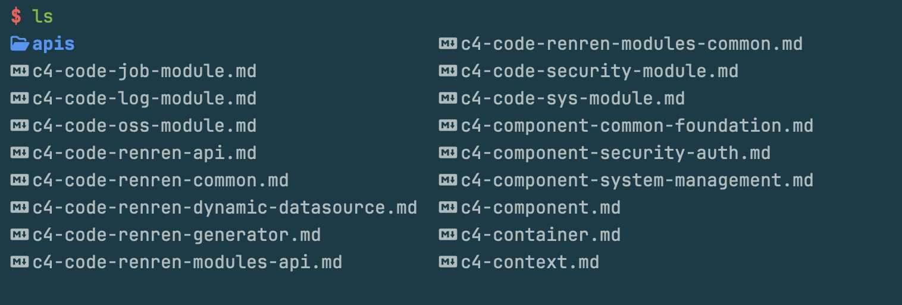
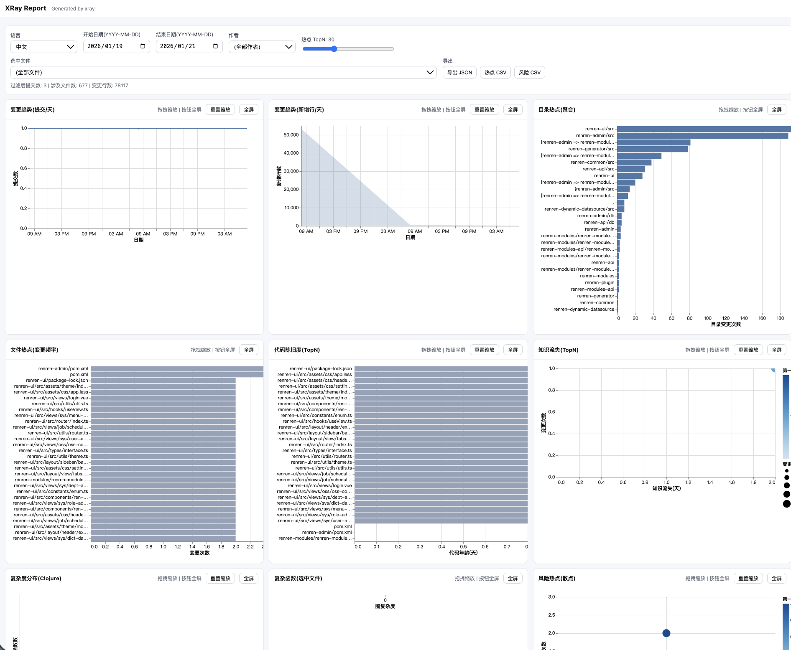
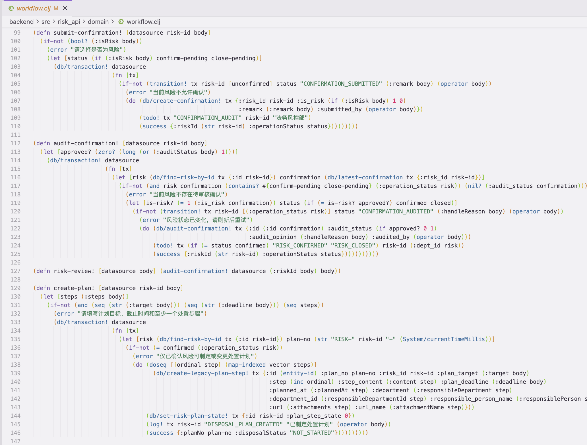
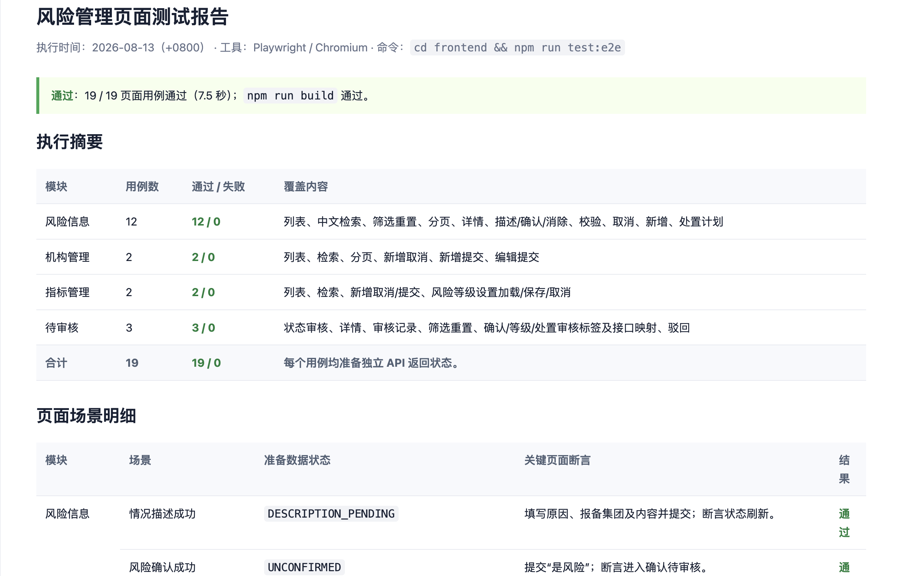

机器人公共服务平台
项目基础仅有页面
素材本地化 · 多路由 · 核心交互
AI 开发平台 · 实证汇报
让组织获得需求自由
01 · Conclusion first
项目基础仅有页面
素材本地化 · 多路由 · 核心交互
项目基础前端页面 + MySQL 数据库
风险流程 · 本地 API · 既有数据保护
项目基础源代码 + 业务分析文档
热点取证 · 整改计划 · 知识转移
02 · Practice 1 / Fast clone
青岛市具身智能机器人公共服务平台：从公开站点到本地静态镜像与市场数据适配。
采用公司模板新建 4 个管理页面，将页面数据改造为动态数据；DeepSeek 消耗约 ¥1，完成耗时约 4 小时。首页、菜单、页脚、登录/注册弹窗、数据服务卡片/详情/购买入口可用；路由验证未发现控制台错误。

03 · Practice 2 / Complex clone
基于既有表适配，不建表、不迁移、不改 schema；原系统仅登录、浏览与界面取证。
基于 test1.sqlite 的原表与现有数据适配；不建表、不迁移、不改 schema。
风险监控、企业/指标管理、待审核、股权结构等本地可运行。
已实现 31 个本地接口 API，用于演示数据与风险流程闭环。
04 · Practice 2 / Running evidence

组合筛选、分页、导出、新增、详情和状态动作。
前端、后端与 SQL 合计。
TypeScript + Vite 构建通过。
关键页面与流程测试通过。
覆盖风险确认、审核与处置计划等核心规则。
研究规格文档 + 本地 PNG/SVG 素材。
05 · Practice 3 / Legacy takeover




06 · Evidence matrix
仅有页面与静态资源
前端页面 + MySQL 数据库
有源码与业务分析文档
关键挑战页面、素材、路由、交互
数据库零侵入、复杂流程
热点耦合、知识孤岛
交付物本地站点、资源映射、路由验证
本地后台、规格、数据适配、测试
架构地图、风险报告、整改任务
证明能力快速复刻
复杂复刻
安全接手与治理
07 · How it works / Gastown roles
拆任务、建立 Convoy、分派研究/实现/测试任务、汇总结果。
在隔离 Git worktree 中完成边界清晰的工作包。
项目级与跨项目巡检、恢复、升级，发现卡住任务。
合并验证门禁；人类保留范围决策、审查与验收。
08 · How it works / Workflow
目标、范围、数据边界、验收条件。
拆解 Convoy，分派有边界的工作包。
研究、实现、测试在隔离 worktree 并行。
构建/测试门禁、合并验证、人工签收。
09 · Why multi-agent saves time
单线程交付
串行等待Gastown 多 Agent
并行可控10 · Quality evidence
为 renren-security 生成上下文、容器、组件、认证、系统管理、日志、任务、OSS 等结构文档。
3 次提交、78,117 churn、677 个热点/风险文件；定位最活跃目录 renren-ui/src。
从 theme、全局样式、登录等热点开始，补测试、双人 review、拆耦合、建立 backup owner。
分析窗口内仅 1 位活跃贡献者；theme/index.less、app.less 等高变更样式热点均由单人主导（Top1 归属 100%）。平台据此生成 P0 专项：补回归测试、双人 review、建立 backup owner，并拆分主题职责。
Next move · Controlled pilot
在受控测试环境完成“导入 → 复刻 → 验证 → 交接”的首个闭环；以可运行代码和质量证据决定后续投入。
$ start-pilot --scope one-module --evidence required